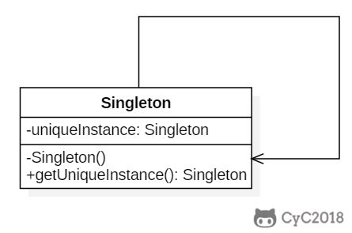
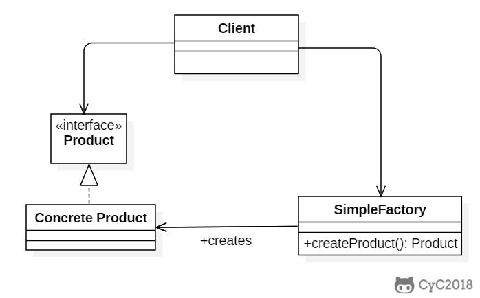
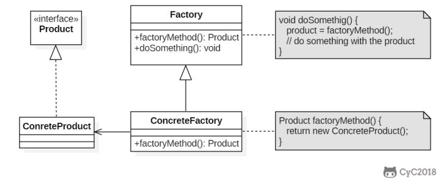
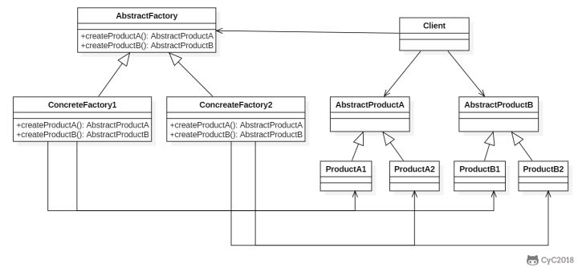
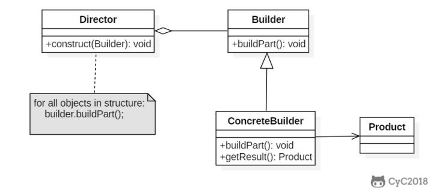
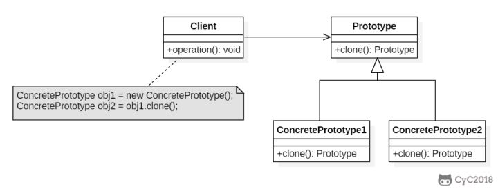

本人免费整理了Java高级资料，涵盖了Java、Redis、MongoDB、MySQL、Zookeeper、Spring Cloud、Dubbo高并发分布式等教程，一共30G，需要自己领取。
传送门：https://mp.weixin.qq.com/s/JzddfH-7yNudmkjT0IRL8Q
设计模式是解决问题的方案，学习现有的设计模式可以做到经验复用。
拥有设计模式词汇，在沟通时就能用更少的词汇来讨论，并且不需要了解底层细节。
确保一个类只有一个实例，并提供该实例的全局访问点。
使用一个私有构造函数、一个私有静态变量以及一个公有静态函数来实现。
私有构造函数保证了不能通过构造函数来创建对象实例，只能通过公有静态函数返回唯一的私有静态变量。

以下实现中，私有静态变量 uniqueInstance 被延迟实例化，这样做的好处是，如果没有用到该类，那么就不会实例化 uniqueInstance，从而节约资源。
这个实现在多线程环境下是不安全的，如果多个线程能够同时进入 if (uniqueInstance == null) ，并且此时 uniqueInstance 为 null，那么会有多个线程执行 uniqueInstance = new Singleton(); 语句，这将导致实例化多次 uniqueInstance。
public class Singleton {
private static Singleton uniqueInstance;
private Singleton() {
}
public static Singleton getUniqueInstance() {
if (uniqueInstance == null) {
uniqueInstance = new Singleton();
}
return uniqueInstance;
}
}
线程不安全问题主要是由于 uniqueInstance 被实例化多次，采取直接实例化 uniqueInstance 的方式就不会产生线程不安全问题。
但是直接实例化的方式也丢失了延迟实例化带来的节约资源的好处。
private static Singleton uniqueInstance = new Singleton();
只需要对 getUniqueInstance() 方法加锁，那么在一个时间点只能有一个线程能够进入该方法，从而避免了实例化多次 uniqueInstance。
但是当一个线程进入该方法之后，其它试图进入该方法的线程都必须等待，即使 uniqueInstance 已经被实例化了。这会让线程阻塞时间过长，因此该方法有性能问题，不推荐使用。
public static synchronized Singleton getUniqueInstance() {
if (uniqueInstance == null) {
uniqueInstance = new Singleton();
}
return uniqueInstance;
}
uniqueInstance 只需要被实例化一次，之后就可以直接使用了。加锁操作只需要对实例化那部分的代码进行，只有当 uniqueInstance 没有被实例化时，才需要进行加锁。
双重校验锁先判断 uniqueInstance 是否已经被实例化，如果没有被实例化，那么才对实例化语句进行加锁。
public class Singleton {
private volatile static Singleton uniqueInstance;
private Singleton() {
}
public static Singleton getUniqueInstance() {
if (uniqueInstance == null) {
synchronized (Singleton.class) {
if (uniqueInstance == null) {
uniqueInstance = new Singleton();
}
}
}
return uniqueInstance;
}
}
考虑下面的实现，也就是只使用了一个 if 语句。在 uniqueInstance == null 的情况下，如果两个线程都执行了 if 语句，那么两个线程都会进入 if 语句块内。虽然在 if 语句块内有加锁操作，但是两个线程都会执行 uniqueInstance = new Singleton(); 这条语句，只是先后的问题，那么就会进行两次实例化。因此必须使用双重校验锁，也就是需要使用两个 if 语句：第一个 if 语句用来避免 uniqueInstance 已经被实例化之后的加锁操作，而第二个 if 语句进行了加锁，所以只能有一个线程进入，就不会出现 uniqueInstance == null 时两个线程同时进行实例化操作。
public class Singleton {
private volatile static Singleton uniqueInstance;
private Singleton() {
}
public static Singleton getUniqueInstance() {
if (uniqueInstance == null) {
synchronized (Singleton.class) {
if (uniqueInstance == null) {
uniqueInstance = new Singleton();
}
}
}
return uniqueInstance;
}
}
uniqueInstance 采用 volatile 关键字修饰也是很有必要的， uniqueInstance = new Singleton(); 这段代码其实是分为三步执行：
但是由于 JVM 具有指令重排的特性，执行顺序有可能变成 1>3>2。指令重排在单线程环境下不会出现问题，但是在多线程环境下会导致一个线程获得还没有初始化的实例。例如，线程 T1 执行了 1 和 3，此时 T2 调用 getUniqueInstance() 后发现 uniqueInstance 不为空，因此返回 uniqueInstance，但此时 uniqueInstance 还未被初始化。
使用 volatile 可以禁止 JVM 的指令重排，保证在多线程环境下也能正常运行。
当 Singleton 类被加载时，静态内部类 SingletonHolder 没有被加载进内存。只有当调用 getUniqueInstance() 方法从而触发 SingletonHolder.INSTANCE 时 SingletonHolder 才会被加载，此时初始化 INSTANCE 实例，并且 JVM 能确保 INSTANCE 只被实例化一次。
这种方式不仅具有延迟初始化的好处，而且由 JVM 提供了对线程安全的支持。
public class Singleton {
private Singleton() {
}
private static class SingletonHolder {
private static final Singleton INSTANCE = new Singleton();
}
public static Singleton getUniqueInstance() {
return SingletonHolder.INSTANCE;
}
}
public enum Singleton {
INSTANCE;
private String objName;
public String getObjName() {
return objName;
}
public void setObjName(String objName) {
this.objName = objName;
}
public static void main(String[] args) {
// 单例测试
Singleton firstSingleton = Singleton.INSTANCE;
firstSingleton.setObjName("firstName");
System.out.println(firstSingleton.getObjName());
Singleton secondSingleton = Singleton.INSTANCE;
secondSingleton.setObjName("secondName");
System.out.println(firstSingleton.getObjName());
System.out.println(secondSingleton.getObjName());
// 反射获取实例测试
try {
Singleton[] enumConstants = Singleton.class.getEnumConstants();
for (Singleton enumConstant : enumConstants) {
System.out.println(enumConstant.getObjName());
}
} catch (Exception e) {
e.printStackTrace();
}
}
}
firstName
secondName
secondName
secondName
该实现可以防止反射攻击。在其它实现中，通过 setAccessible() 方法可以将私有构造函数的访问级别设置为 public，然后调用构造函数从而实例化对象，如果要防止这种攻击，需要在构造函数中添加防止多次实例化的代码。该实现是由 JVM 保证只会实例化一次，因此不会出现上述的反射攻击。
该实现在多次序列化和序列化之后，不会得到多个实例。而其它实现需要使用 transient 修饰所有字段，并且实现序列化和反序列化的方法。
在创建一个对象时不向客户暴露内部细节，并提供一个创建对象的通用接口。
简单工厂把实例化的操作单独放到一个类中，这个类就成为简单工厂类，让简单工厂类来决定应该用哪个具体子类来实例化。
这样做能把客户类和具体子类的实现解耦，客户类不再需要知道有哪些子类以及应当实例化哪个子类。客户类往往有多个，如果不使用简单工厂，那么所有的客户类都要知道所有子类的细节。而且一旦子类发生改变，例如增加子类，那么所有的客户类都要进行修改。

public interface Product {
}
public class ConcreteProduct implements Product {
}
public class ConcreteProduct1 implements Product {
}
public class ConcreteProduct2 implements Product {
}
以下的 Client 类包含了实例化的代码，这是一种错误的实现。如果在客户类中存在这种实例化代码，就需要考虑将代码放到简单工厂中。
public class Client {
public static void main(String[] args) {
int type = 1;
Product product;
if (type == 1) {
product = new ConcreteProduct1();
} else if (type == 2) {
product = new ConcreteProduct2();
} else {
product = new ConcreteProduct();
}
// do something with the product
}
}
以下的 SimpleFactory 是简单工厂实现，它被所有需要进行实例化的客户类调用。
public class SimpleFactory {
public Product createProduct(int type) {
if (type == 1) {
return new ConcreteProduct1();
} else if (type == 2) {
return new ConcreteProduct2();
}
return new ConcreteProduct();
}
}
public class Client {
public static void main(String[] args) {
SimpleFactory simpleFactory = new SimpleFactory();
Product product = simpleFactory.createProduct(1);
// do something with the product
}
}
定义了一个创建对象的接口，但由子类决定要实例化哪个类。工厂方法把实例化操作推迟到子类。
在简单工厂中，创建对象的是另一个类，而在工厂方法中，是由子类来创建对象。
下图中，Factory 有一个 doSomething() 方法，这个方法需要用到一个产品对象，这个产品对象由 factoryMethod() 方法创建。该方法是抽象的，需要由子类去实现。

public abstract class Factory {
abstract public Product factoryMethod();
public void doSomething() {
Product product = factoryMethod();
// do something with the product
}
}
public class ConcreteFactory extends Factory {
public Product factoryMethod() {
return new ConcreteProduct();
}
}
public class ConcreteFactory1 extends Factory {
public Product factoryMethod() {
return new ConcreteProduct1();
}
}
public class ConcreteFactory2 extends Factory {
public Product factoryMethod() {
return new ConcreteProduct2();
}
}
提供一个接口，用于创建 相关的对象家族 。
抽象工厂模式创建的是对象家族，也就是很多对象而不是一个对象，并且这些对象是相关的，也就是说必须一起创建出来。而工厂方法模式只是用于创建一个对象，这和抽象工厂模式有很大不同。
抽象工厂模式用到了工厂方法模式来创建单一对象，AbstractFactory 中的 createProductA() 和 createProductB() 方法都是让子类来实现，这两个方法单独来看就是在创建一个对象，这符合工厂方法模式的定义。
至于创建对象的家族这一概念是在 Client 体现，Client 要通过 AbstractFactory 同时调用两个方法来创建出两个对象，在这里这两个对象就有很大的相关性，Client 需要同时创建出这两个对象。
从高层次来看，抽象工厂使用了组合，即 Cilent 组合了 AbstractFactory，而工厂方法模式使用了继承。

public class AbstractProductA {
}
public class AbstractProductB {
}
public class ProductA1 extends AbstractProductA {
}
public class ProductA2 extends AbstractProductA {
}
public class ProductB1 extends AbstractProductB {
}
public class ProductB2 extends AbstractProductB {
}
public abstract class AbstractFactory {
abstract AbstractProductA createProductA();
abstract AbstractProductB createProductB();
}
public class ConcreteFactory1 extends AbstractFactory {
AbstractProductA createProductA() {
return new ProductA1();
}
AbstractProductB createProductB() {
return new ProductB1();
}
}
public class ConcreteFactory2 extends AbstractFactory {
AbstractProductA createProductA() {
return new ProductA2();
}
AbstractProductB createProductB() {
return new ProductB2();
}
}
public class Client {
public static void main(String[] args) {
AbstractFactory abstractFactory = new ConcreteFactory1();
AbstractProductA productA = abstractFactory.createProductA();
AbstractProductB productB = abstractFactory.createProductB();
// do something with productA and productB
}
}
封装一个对象的构造过程，并允许按步骤构造。

以下是一个简易的 StringBuilder 实现，参考了 JDK 1.8 源码。
public class AbstractStringBuilder {
protected char[] value;
protected int count;
public AbstractStringBuilder(int capacity) {
count = 0;
value = new char[capacity];
}
public AbstractStringBuilder append(char c) {
ensureCapacityInternal(count + 1);
value[count++] = c;
return this;
}
private void ensureCapacityInternal(int minimumCapacity) {
// overflow-conscious code
if (minimumCapacity - value.length > 0)
expandCapacity(minimumCapacity);
}
void expandCapacity(int minimumCapacity) {
int newCapacity = value.length * 2 + 2;
if (newCapacity - minimumCapacity < 0)
newCapacity = minimumCapacity;
if (newCapacity < 0) {
if (minimumCapacity < 0) // overflow
throw new OutOfMemoryError();
newCapacity = Integer.MAX_VALUE;
}
value = Arrays.copyOf(value, newCapacity);
}
}
public class StringBuilder extends AbstractStringBuilder {
public StringBuilder() {
super(16);
}
@Override
public String toString() {
// Create a copy, don't share the array
return new String(value, 0, count);
}
}
public class Client {
public static void main(String[] args) {
StringBuilder sb = new StringBuilder();
final int count = 26;
for (int i = 0; i < count; i++) {
sb.append((char) ('a' + i));
}
System.out.println(sb.toString());
}
}
abcdefghijklmnopqrstuvwxyz
使用原型实例指定要创建对象的类型，通过复制这个原型来创建新对象。

public abstract class Prototype {
abstract Prototype myClone();
}
public class ConcretePrototype extends Prototype {
private String filed;
public ConcretePrototype(String filed) {
this.filed = filed;
}
@Override
Prototype myClone() {
return new ConcretePrototype(filed);
}
@Override
public String toString() {
return filed;
}
}
public class Client {
public static void main(String[] args) {
Prototype prototype = new ConcretePrototype("abc");
Prototype clone = prototype.myClone();
System.out.println(clone.toString());
}
}
abc